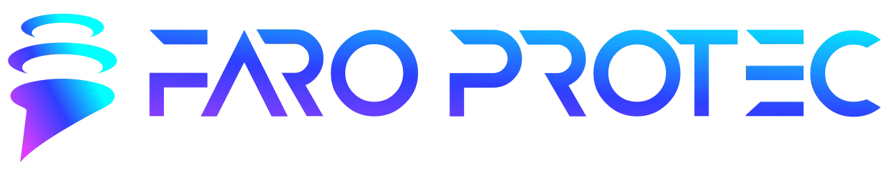

Protección de Endpoints
Prevención, detección y respuesta automática en un solo agente ligero.
Implementación experta en México para empresas industriales, corporativas y entornos críticos. SentinelOne ayuda a fortalecer la protección endpoint con prevención, detección y respuesta automática en un solo agente ligero.

Soluciones destacadas
Prevención, detección, respuesta, visibilidad y soporte especializado para fortalecer la continuidad operativa de tu empresa.
Prevención, detección y respuesta automática en un solo agente ligero.
Inventario en tiempo real y trazabilidad absoluta de cada evento con Storyline™.
Visibilidad en endpoints y nube con contexto unificado para una defensa más precisa.
Monitoreo de procesos vivos, contención inmediata y rollback activo ante daños al endpoint.
Identity Detection & Response para reforzar la defensa y reducir superficie de ataque.
Monitoreo proactivo para organizaciones que necesitan una operación de seguridad más madura.
Defensa anticipada, detección en tiempo real, rollback activo y control de dispositivos.
Asistencia en planeación e implementación con ingenieros certificados y escalación prioritaria.
¿Qué es SentinelOne?
Detecta amenazas conocidas y desconocidas en milisegundos, contiene ataques automáticamente en el endpoint y ofrece visibilidad centralizada con Storyline™.
Detectamos amenazas conocidas y desconocidas con análisis avanzado y heurística proactiva.
Contenemos el ataque automáticamente en el endpoint para evitar propagación.
Inventario y trazabilidad total de cada evento en endpoints y nube.

Protección por sector
Diseñado para entornos donde la continuidad operativa es la prioridad absoluta.
Blindaje para transacciones y usuarios con el menor impacto en la operación técnica.
Seguridad escalable que simplifica la visibilidad sin recargar a tu equipo de TI.
Arquitectura multinivel activa
SentinelOne combina defensa anticipada, detección en tiempo real, rollback activo, control de dispositivos, control de red y visibilidad Storyline™.
Protección empresarial
SentinelOne ayuda a organizaciones que necesitan una defensa más fuerte contra malware, ransomware y amenazas avanzadas. Su enfoque combina prevención, visibilidad y respuesta automatizada para reducir el impacto operativo de los incidentes.
Preguntas frecuentes
SentinelOne puede formar parte de una estrategia moderna de protección endpoint al combinar prevención, detección y respuesta automatizada.
Ayuda a detectar y contener malware, ransomware y amenazas avanzadas con un enfoque orientado a empresas.
Ofrece protección para endpoints con visibilidad, respuesta autónoma, control y contexto centralizado.
Sí, esta landing está orientada a proyectos de SentinelOne en México con implementación y soporte especializado.
La plataforma ayuda a detener ransomware en tiempo real con contención automática, rollback activo y trazabilidad del incidente.
La protección con IA ayuda a acelerar la detección, reducir el tiempo de respuesta y reforzar la continuidad operativa de la empresa.
Valor para la empresa
SentinelOne ayuda a reducir la exposición a malware, ransomware y amenazas avanzadas con una combinación de prevención, detección, respuesta y visibilidad centralizada. Para organizaciones que buscan antivirus empresarial, antimalware moderno y protección con IA, la plataforma concentra capacidades clave en una misma operación de seguridad.
Prompt Security, a SentinelOne company
Mientras SentinelOne protege endpoints, identidades, nube y operación de seguridad, Prompt Security agrega una capa especializada para uso seguro de IA en empleados, copilots, aplicaciones propias y agentes de IA. Juntas, ambas tecnologías ayudan a reducir riesgo operativo, fuga de datos y exposición a nuevas amenazas impulsadas por IA.
Ayuda a adoptar herramientas de IA sin perder visibilidad, gobierno ni protección de datos frente a Shadow AI y riesgos regulatorios.
Evaluar uso seguroProtege secretos, PII e IP cuando los equipos usan asistentes como GitHub Copilot o Cursor, con visibilidad y gobierno de uso.
Proteger copilotsReduce riesgos como prompt injection, jailbreaks, filtrado de datos, respuestas dañinas y otras fallas en aplicaciones con LLM.
Blindar appsDa visibilidad sobre agentes, actividad MCP, scoring dinámico de riesgo y enforcement para reducir abuso, exceso de permisos y exposición.
Evaluar agentesRiesgos de IA que ya impactan a la empresa
La adopción de IA en empleados, desarrollo y aplicaciones introduce riesgos que no siempre quedan cubiertos por controles tradicionales: Shadow AI, fugas de secretos o PII, temas no permitidos por política interna, prompt injection, jailbreaks, agentes inseguros, respuestas fuera de marca y costos anómalos por abuso.
Cobertura complementaria
Visibilidad sobre herramientas de IA en uso, reducción de Shadow AI, protección de datos y coaching no intrusivo para uso seguro.
Adopción de asistentes de código con redacción y sanitización de secretos, visibilidad de uso y gobierno durante el ciclo de desarrollo.
Protección contra prompt injection, data leaks, contenido inseguro, RCE, denial of wallet y otras exposiciones en apps propias.
Descubrimiento de agentes y MCP, scoring de riesgo, least privilege, logging y supervisión continua de decisiones e interacciones.
Reglas granulares por departamento o usuario, visibilidad centralizada y mejores bases para auditoría, revisión forense y gobierno.
La meta no es frenar la adopción de IA, sino permitir que el negocio la use con más confianza, control y velocidad de respuesta.
Planes Singularity™
Póliza de soporte premium Faro Protec
Cobertura especializada para acompañar la operación, la implementación y la escalación de casos prioritarios.

Agenda una demo
Protección total, impulsada por IA. Unifica tu defensa, supera a las amenazas y potencia a tus analistas con seguridad autónoma.